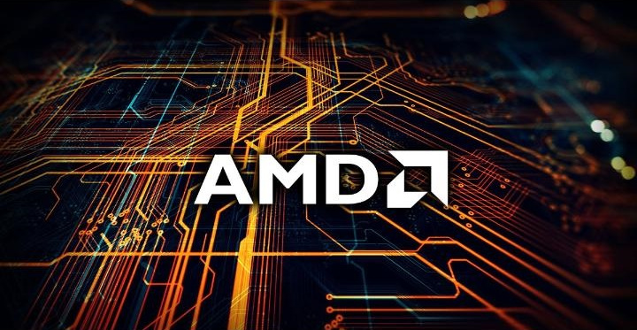
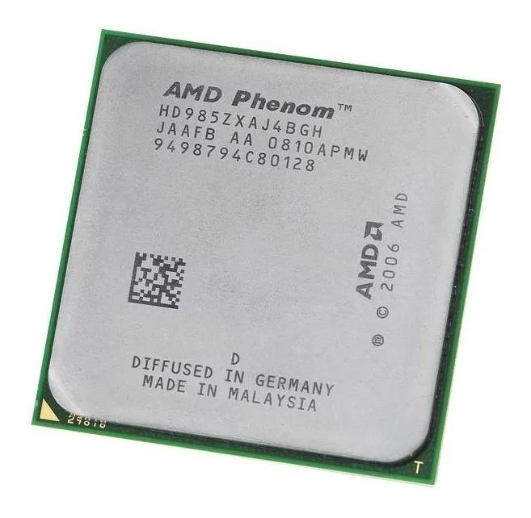
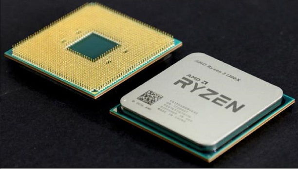

AMD
Hoje, a companhia é mundialmente conhecida pela fabricação de processadores, placas gráficas, entre outros, e pelo trabalho que alia qualidade a preços justos. Além disso, visando sustentar seu compromisso com a inovação, a AMD Advanced Micro Devices, (em Tradução literal: Micro Dispositivos Avançados) tem entre suas metas o atendimento às necessidades de empresas de todo o mundo: desde o seu nascimento, a empresa expandiu suas operações para 23 países. Seu produto mais na década de 1990 foi o processador Athlon, utilizado em computadores pessoais.

Athlon II : Está família de processadores inclui produtos quad-core de baixo custo. O modelo mais simples desta família pode ser formalmente considerado uma CPU de baixo custo. A maior desvantagem dos processadores Athlon II X4 em relação à série Phenom II é a ausência de memória cache L3 e um cache L2 relativamente pequeno, com apenas 512 KB por núcleo. Felizmente, esses processadores têm boas velocidades de clock: os modelos atuais trabalham entre 3,0 e 3,1 GHz.

Phenom: Outra família de processadores que fica na fronteira entre a linha principal e a de baixo custo. Ela inclui CPUs dual-core. Para ser mais exato, o Phentom II X2 tem 6 MB de cache L3 compartilhado, além dos 512 KB de cache L2 por núcleo. Além disso, todos os processadores Phenom II pertencem à categoria Black Edition, o que significa que o overclock pode ser feito com o ajuste do multiplicador de clock. A frequência de clock que se enquadra na linha de preço principal é de 3,3 GHz.

Ryzen: Está familia domina os dias de hoje tendo ate a 7 geração, super potente com caches maiores do que qualquer familia, seu clock é de 4.5GHz e seu custo esta em torno de 2.000 reais para mais dependendo da sua geração.
